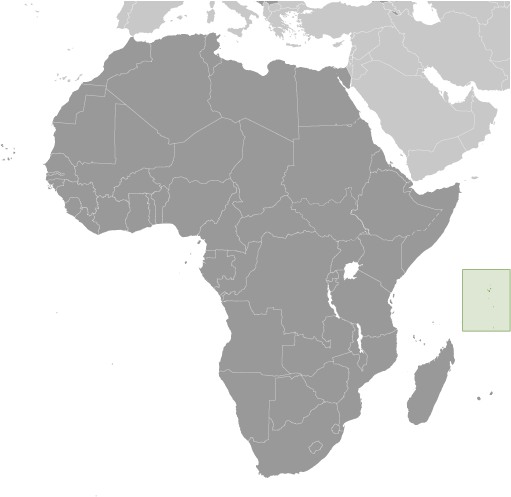
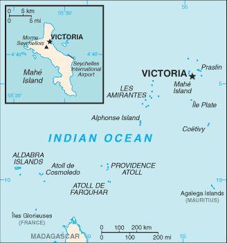
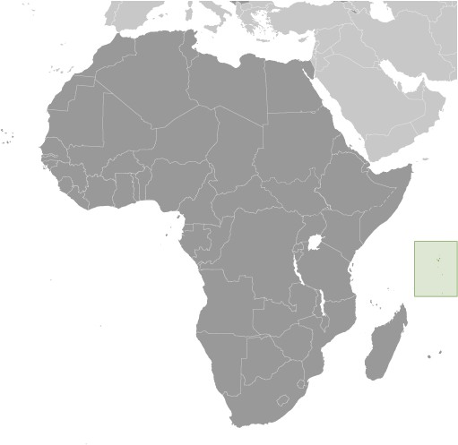
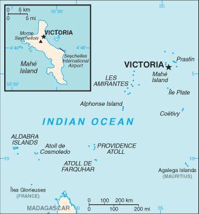

Africa :: SEYCHELLES
Introduction :: SEYCHELLES
-
A lengthy struggle between France and Great Britain for the islands ended in 1814, when they were ceded to the latter. Independence came in 1976. Single-party rule was brought to a close with a new constitution and free elections in 1993. President France-Albert RENE, who had served since 1977, was reelected in 2001, but stepped down in 2004. Vice President James Alix MICHEL took over the presidency and in July 2006 was elected to a new five-year term; he was reelected in May 2011 and again in December 2015. In October 2016, James MICHEL resigned and handed over the presidency to his Vice-President Danny FAURE.
Geography :: SEYCHELLES
-
archipelago in the Indian Ocean, northeast of Madagascar4 35 S, 55 40 EAfricatotal: 455 sq kmland: 455 sq kmwater: 0 sq kmcountry comparison to the world: 1992.5 times the size of Washington, DC0 km491 kmterritorial sea: 12 nmcontiguous zone: 24 nmexclusive economic zone: 200 nmcontinental shelf: 200 nm or to the edge of the continental margintropical marine; humid; cooler season during southeast monsoon (late May to September); warmer season during northwest monsoon (March to May)Mahe Group is volcanic with a narrow coastal strip and rocky, hilly interior; others are coral, flat, elevated reefsmean elevation: NAelevation extremes: lowest point: Indian Ocean 0 mhighest point: Morne Seychellois 905 mfish, coconuts (copra), cinnamon treesagricultural land: 6.5%arable land 2.2%; permanent crops 4.3%; permanent pasture 0%forest: 88.5%other: 5% (2011 est.)3 sq km (2012)more than three-quarters of the population lives on the main island of Mahe; Praslin contains less than 10%; a smaller percent on La Digue and the outer islandslies outside the cyclone belt, so severe storms are rare; occasional short droughtswater supply depends on catchments to collect rainwaterparty to: Biodiversity, Climate Change, Climate Change-Kyoto Protocol, Desertification, Endangered Species, Hazardous Wastes, Law of the Sea, Marine Dumping, Ozone Layer Protection, Ship Pollution, Wetlandssigned, but not ratified: none of the selected agreementssmallest African country; the constitution of the Republic of Seychelles lists 155 islands: 42 granitic and 113 coralline; by far the largest island is Mahe, which is home to about 90% of the population and the site of the capital city of Victoria
People and Society :: SEYCHELLES
-
93,920 (July 2017 est.)country comparison to the world: 198noun: Seychellois (singular and plural)adjective: Seychelloismixed French, African, Indian, Chinese, and ArabSeychellois Creole (official) 89.1%, English (official) 5.1%, French (official) 0.7%, other 3.8%, unspecified 1.4% (2010 est.)Roman Catholic 76.2%, Protestant 10.5% (Anglican 6.1%, Pentecostal Assembly 1.5%, Seventh Day Adventist 1.2%, other Protestant 1.7), other Christian 2.4%, Hindu 2.4%, Muslim 1.6%, other non-Christian 1.1%, unspecified 4.8%, none 0.9% (2010 est.)Seychelles has no indigenous population and was first permanently settled by a small group of French planters, African slaves, and South Indians in 1770. Seychelles’ modern population is composed of the descendants of French and later British settlers, Africans, and Indian, Chinese, and Middle Eastern traders and is concentrated on three of its 155 islands – the vast majority on Mahe and lesser numbers on Praslin and La Digue. Seychelles’ population grew rapidly during the second half of the 20th century, largely due to natural increase, but the pace has slowed because of fertility decline. The total fertility rate dropped sharply from 4.0 children per woman in 1980 to 1.9 in 2015, mainly as a result of a family planning program, free education and health care, and increased female labor force participation. Life expectancy has increased steadily, but women on average live 9 years longer than men, a difference that is higher than that typical of developed countries.The combination of reduced fertility and increased longevity has resulted in an aging population, which will put pressure on the government’s provision of pensions and health care. Seychelles’ sustained investment in social welfare services, such as free primary health care and education up to the post-secondary level, have enabled the country to achieve a high human development index score – among the highest in Africa. Despite some of its health and education indicators being nearly on par with Western countries, Seychelles has a high level of income inequality.An increasing number of migrant workers – mainly young men – have been coming to Seychelles in recent years to work in the construction and tourism industries. As of 2011, foreign workers made up nearly a quarter of the workforce. Indians are the largest non-Seychellois population – representing half of the country’s foreigners – followed by Malagasy.0-14 years: 19.88% (male 9,578/female 9,089)15-24 years: 13.24% (male 6,536/female 5,898)25-54 years: 49.36% (male 24,585/female 21,775)55-64 years: 9.88% (male 4,758/female 4,522)65 years and over: 7.64% (male 2,868/female 4,311) (2017 est.)total dependency ratio: 42.8youth dependency ratio: 31elderly dependency ratio: 11.7potential support ratio: 8.5 (2015 est.)total: 35.4 yearsmale: 34.9 yearsfemale: 36 years (2017 est.)country comparison to the world: 760.77% (2017 est.)country comparison to the world: 13413.7 births/1,000 population (2017 est.)country comparison to the world: 1427 deaths/1,000 population (2017 est.)country comparison to the world: 1321 migrant(s)/1,000 population (2017 est.)country comparison to the world: 58more than three-quarters of the population lives on the main island of Mahe; Praslin contains less than 10%; a smaller percent on La Digue and the outer islandsurban population: 54.5% of total population (2017)rate of urbanization: 1.02% annual rate of change (2015-20 est.)VICTORIA (capital) 26,000 (2014)at birth: 1.03 male(s)/female0-14 years: 1.05 male(s)/female15-24 years: 1.1 male(s)/female25-54 years: 1.12 male(s)/female55-64 years: 1.06 male(s)/female65 years and over: 0.64 male(s)/femaletotal population: 1.06 male(s)/female (2016 est.)total: 10 deaths/1,000 live birthsmale: 12.5 deaths/1,000 live birthsfemale: 7.4 deaths/1,000 live births (2017 est.)country comparison to the world: 136total population: 74.9 yearsmale: 70.4 yearsfemale: 79.6 years (2017 est.)country comparison to the world: 1181.85 children born/woman (2017 est.)country comparison to the world: 1463.4% of GDP (2014)country comparison to the world: 1760.98 physicians/1,000 population (2012)3.6 beds/1,000 population (2011)improved:urban: 95.7% of populationrural: 95.7% of populationtotal: 95.7% of populationunimproved:urban: 4.3% of populationrural: 4.3% of populationtotal: 4.3% of population (2015 est.)improved:urban: 98.4% of populationrural: 98.4% of populationtotal: 98.4% of populationunimproved:urban: 1.6% of populationrural: 1.6% of populationtotal: 1.6% of population (2015 est.)NANANA14% (2016)country comparison to the world: 1303.6% (2012)3.6% of GDP (2011)country comparison to the world: 121definition: age 15 and over can read and writetotal population: 91.8%male: 91.4%female: 92.3% (2012 est.)total: 14 yearsmale: 13 yearsfemale: 15 years (2015)total: 14%male: 12.1%female: 16.2% (2015 est.)
Government :: SEYCHELLES
-
conventional long form: Republic of Seychellesconventional short form: Seychelleslocal long form: Republic of Seychelleslocal short form: Seychellesetymology: named by French Captain Corneille Nicholas MORPHEY after Jean Moreau de SECHELLES, the finance minister of France, in 1756presidential republicname: Victoriageographic coordinates: 4 37 S, 55 27 Etime difference: UTC+4 (9 hours ahead of Washington, DC, during Standard Time)25 administrative districts; Anse aux Pins, Anse Boileau, Anse Etoile, Anse Royale, Au Cap, Baie Lazare, Baie Sainte Anne, Beau Vallon, Bel Air, Bel Ombre, Cascade, Glacis, Grand Anse Mahe, Grand Anse Praslin, Inner Islands, La Riviere Anglaise, Les Mamalles, Mont Buxton, Mont Fleuri, Plaisance, Pointe Larue, Port Glaud, Roche Caiman, Saint Louis, Takamaka29 June 1976 (from the UK)Constitution Day, 18 June (1993); Independence Day (National Day), 29 June (1976)history: previous 1970, 1979; latest drafted May 1993, approved by referendum 18 June 1993, effective 23 June 1993amendments: proposed by the National Assembly; passage requires at least two-thirds majority vote by the National Assembly; passage of amendments affecting the country’s sovereignty, symbols and languages, the supremacy of the constitution, fundamental rights and freedoms, amendment procedures, and dissolution of the Assembly also requires approval by at least 60% of voters in a referendum; amended several times, last in 2017 (2017)mixed legal system of English common law, French civil law, and customary lawhas not submitted an ICJ jurisdiction declaration; accepts ICCt jurisdictioncitizenship by birth: nocitizenship by descent only: at least one parent must be a citizen of the Seychellesdual citizenship recognized: noresidency requirement for naturalization: 5 years18 years of age; universalchief of state: President Danny FAURE (since 16 October 2016); Vice President Vincent MERITON (since 28 October 2016); note - James Alix MICHEL resigned the presidency effective 16 October 2016; the president is both chief of state and head of governmenthead of government: President Danny FAURE (since 16 October 2016); Vice President Vincent MERITON (since 28 October 2016); note - James Alix MICHEL resigned the presidency effective 16 October 2016cabinet: Council of Ministers appointed by the presidentelections/appointments: president directly elected by absolute majority popular vote in 2 rounds if needed for a 5-year term (eligible for 1 additional term); election last held on 3-5 December 2015 with runoff on 16-18 December 2015 (next to be held in December 2020)election results: President James Alix MICHEL reelected president; percent of vote in second round - James Alix MICHEL (PL) 50.2%, Wavel RAMKALAWAN (SNP) 49.8%description: unicameral National Assembly or Assemblee Nationale (up to 35 seats - the Assembly elected in September 2016 has 33 members; 25 members directly elected in single-seat constituencies by simple majority vote and up to 10 members elected by proportional representation vote; members serve 5-year terms)elections: last held on 8-10 September 2016 (next to be held in 2021); note - the National Assembly was dissolved in July 2011 resulting in early electionselection results: percent of vote by party - LDS 49.6%, PL 49.2%, other 1.2%; seats by party - LDS 19, PL 14highest court(s): Seychelles Court of Appeal (consists of the court president and 4 justices); Supreme Court of Seychelles (consists of the chief justice and 9 puisne judges); Constitutional Court (consists of 3 Supreme Court judges)judge selection and term of office: all judges appointed by the president of the republic upon the recommendation of the Constitutional Appointments Authority, a 3-member body, with 1 member appointed by the president of the republic, 1 by the opposition leader in the National Assembly, and 1 by the other 2 appointees; judges appointed until retirement at age 70subordinate courts: Magistrates' Courts of Seychelles; Family Tribunal for issues such as domestic violence, child custody, and maintenance; Employment Tribunal for labor-related disputesLafors Demokratik Seselwa or LSD (Martin AGLAE)People's Party (Parti Lepep) or PL [James Alix MICHEL] (formerly SPPF)Seselwa (Seychelles) United Party or SUP [Robert ERNESTA] (formerly the New Democratic Party or NDP)Seychelles National Party or SNP [Wavel RAMKALAWAN] (formerly the United Opposition or UO)Seychelles Party for Social Justice and Democracy or SPSDSeychelles Patriotic Movement or SPM [Regis FRANCOURT]Seychelloise Alliance (Lalyans Seselwa) [Patrick PILLAY]Seychellois Democratic Alliance (Linyon Demokratik Seselwa) or LDS [Roger MANCIENNE] (includes SNP, Seychelloise Alliance, SPSD, SUP)ACP, AfDB, AOSIS, AU, C, CD, COMESA, EITI (candidate country), FAO, G-77, IAEA, IBRD, ICAO, ICC (NGOs), ICCt, ICRM, IDA, IFAD, IFC, IFRCS, ILO, IMF, IMO, InOC, Interpol, IOC, IOM, IPU, ISO (correspondent), ITU, MIGA, NAM, OIF, OPCW, SADC, UN, UNCTAD, UNESCO, UNIDO, UNWTO, UPU, WCO, WHO, WIPO, WMO, WTO (observer)chief of mission: Ambassador Ronald Jean JUMEAU (since 8 September 2017)chancery: 800 Second Avenue, Suite 400C, New York, NY 10017telephone: [1] (212) 972-1785FAX: [1] (212) 972-1786consulate(s) general: New Yorkthe US does not have an embassy in Seychelles; the US Ambassador to Mauritius is accredited to Seychellesfive oblique bands of blue (hoist side), yellow, red, white, and green (bottom) radiating from the bottom of the hoist side; the oblique bands are meant to symbolize a dynamic new country moving into the future; blue represents sky and sea, yellow the sun giving light and life, red the peoples' determination to work for the future in unity and love, white social justice and harmony, green the land and natural environmentcoco de mer (sea coconut); national colors: blue, yellow, red, white, greenname: "Koste Seselwa" (Seychellois Unite)lyrics/music: David Francois Marc ANDRE and George Charles Robert PAYETnote: adopted 1996
Economy :: SEYCHELLES
-
Since independence in 1976, per capita output in this Indian Ocean archipelago has expanded to roughly seven times the pre-independence, near-subsistence level, moving the island into the upper-middle-income group of countries. Growth has been led by the tourist sector, which employs about 30% of the labor force and provides more than 70% of hard currency earnings, and by tuna fishing.In recent years, the government has encouraged foreign investment to upgrade hotels and other services. At the same time, the government has moved to reduce the dependence on tourism by promoting the development of farming, fishing, and small-scale manufacturing.In 2008, having depleted its foreign exchange reserves, Seychelles defaulted on interest payments due on a $230 million Eurobond, requested assistance from the IMF, and immediately enacted a number of significant structural reforms, including liberalization of the exchange rate, reform of the public sector to include layoffs, and the sale of some state assets. In December 2013, the IMF declared that Seychelles had successfully transitioned to a market-based economy with full employment and a fiscal surplus. Effective 1 January 2017, Seychelles will no longer be eligible for trade benefits under the US African Growth and Opportunities Act after having gained developed country status. Seychelles grew at 4.9% in 2016 because of a strong tourist sector and low commodity prices; its fiscal surplus reached 3% of GDP. The Seychellois Government met the IMF’s performance criteria for 2016 but recognizes a need to make additional progress to combat high poverty levels, estimated at 39% in 2013.$2.561 billion (2016 est.)$2.421 billion (2015 est.)$2.281 billion (2014 est.)note: data are in 2016 dollarscountry comparison to the world: 189$1.429 billion (2016 est.)4.5% (2016 est.)5% (2015 est.)4.5% (2014 est.)country comparison to the world: 50$27,200 (2016 est.)$26,400 (2015 est.)$25,700 (2014 est.)note: data are in 2016 dollarscountry comparison to the world: 6811.8% of GDP (2016 est.)15.2% of GDP (2015 est.)14.6% of GDP (2014 est.)country comparison to the world: 121household consumption: 46.7%government consumption: 26.9%investment in fixed capital: 31.9%investment in inventories: 1.7%exports of goods and services: 71.7%imports of goods and services: -78.9% (2016 est.)agriculture: 2.6%industry: 14%services: 83.4% (2016 est.)coconuts, cinnamon, vanilla, sweet potatoes, cassava (manioc, tapioca), copra, bananas; tunafishing, tourism, beverages2.9% (2016 est.)country comparison to the world: 8739,560 (2006 est.)country comparison to the world: 197agriculture: 3%industry: 23%services: 74% (2006)2.7% (2016 est.)3.3% (2013 est.)country comparison to the world: 3039.3% (2013 est.)lowest 10%: 4.7%highest 10%: 15.4% (2007)revenues: $540.6 millionexpenditures: $525.6 million (2016 est.)38.5% of GDP (2016 est.)country comparison to the world: 461.1% of GDP (2016 est.)country comparison to the world: 2457.6% of GDP (2016 est.)62.9% of GDP (2015 est.)country comparison to the world: 79calendar year-1% (2016 est.)4% (2015 est.)country comparison to the world: 1311.17% (31 December 2010)country comparison to the world: 1812.36% (31 December 2016 est.)12.36% (31 December 2015 est.)country comparison to the world: 66$556.5 million (31 December 2016 est.)$493.8 million (31 December 2015 est.)country comparison to the world: 164$638.2 million (31 December 2016 est.)$565.7 million (31 December 2015 est.)country comparison to the world: 180$565.9 million (31 December 2016 est.)$496.6 million (31 December 2015 est.)country comparison to the world: 174$NA$-263 million (2016 est.)$-256.2 million (2015 est.)country comparison to the world: 88$477.6 million (2016 est.)$449.4 million (2015 est.)country comparison to the world: 173canned tuna, frozen fish, petroleum products (reexports)UAE 28.8%, France 21%, UK 14.7%, Italy 9.2%, Spain 8.8% (2016)$962.4 million (2016 est.)$922.4 million (2015 est.)country comparison to the world: 182machinery and equipment, foodstuffs, petroleum products, chemicals, other manufactured goodsUAE 21.6%, France 9.9%, South Africa 8.4%, Mauritius 7.8%, Spain 7.2%, India 4.9%, China 4.8%, UK 4.7% (2016)$523.5 million (31 December 2016 est.)$536.2 million (31 December 2015 est.)country comparison to the world: 144$2.651 billion (31 December 2016 est.)$2.754 billion (31 December 2015 est.)country comparison to the world: 144Seychelles rupees (SCR) per US dollar -13.319 (2016 est.)13.319 (2015 est.)13.314 (2014 est.)12.747 (2013 est.)13.7 (2012 est.)
Energy :: SEYCHELLES
-
population without electricity: 2,795electrification - total population: 97%electrification - urban areas: 97%electrification - rural areas: 97% (2012)347 million kWh (2015 est.)country comparison to the world: 176322.7 million kWh (2015 est.)country comparison to the world: 1810 kWh (2016 est.)country comparison to the world: 1930 kWh (2016 est.)country comparison to the world: 19787,000 kW (2015 est.)country comparison to the world: 18192% of total installed capacity (2015 est.)country comparison to the world: 590% of total installed capacity (2015 est.)country comparison to the world: 1780% of total installed capacity (2015 est.)country comparison to the world: 2019.2% of total installed capacity (2015 est.)country comparison to the world: 730 bbl/day (2016 est.)country comparison to the world: 1900 bbl/day (2014 est.)country comparison to the world: 1850 bbl/day (2014 est.)country comparison to the world: 1860 bbl (1 January 2017 es)country comparison to the world: 1880 bbl/day (2014 est.)country comparison to the world: 1946,500 bbl/day (2015 est.)country comparison to the world: 1680 bbl/day (2014 est.)country comparison to the world: 1955,956 bbl/day (2014 est.)country comparison to the world: 1620 cu m (2013 est.)country comparison to the world: 1910 cu m (2013 est.)country comparison to the world: 1280 cu m (2013 est.)country comparison to the world: 1770 cu m (2013 est.)country comparison to the world: 1840 cu m (1 January 2014 es)country comparison to the world: 1911.4 million Mt (2013 est.)country comparison to the world: 161
Communications :: SEYCHELLES
-
total subscriptions: 20,836subscriptions per 100 inhabitants: 22 (July 2016 est.)country comparison to the world: 184total: 151,857subscriptions per 100 inhabitants: 163 (July 2016 est.)country comparison to the world: 184general assessment: effective systemdomestic: combined fixed-line and mobile-cellular teledensity is approximately 185 telephones per 100 persons; radiotelephone communications between islands in the archipelagointernational: country code - 248; direct radiotelephone communications with adjacent island countries and African coastal countries; satellite earth station - 1 Intelsat (Indian Ocean) (2016)the government operates the only terrestrial TV station, which provides local programming and airs broadcasts from international services; multi-channel cable and satellite TV are available through 2 providers; the government operates 1 AM and 1 FM radio station; there is 1 privately operated radio station; transmissions of 2 international broadcasters are accessible in Victoria (2016).sctotal: 52,664percent of population: 56.5% (July 2016 est.)country comparison to the world: 184
Transportation :: SEYCHELLES
-
number of registered air carriers: 1inventory of registered aircraft operated by air carriers: 3annual passenger traffic on registered air carriers: 497,496annual freight traffic on registered air carriers: 19,234,992 mt-km (2015)S7 (2016)14 (2013)country comparison to the world: 150total: 72,438 to 3,047 m: 1914 to 1,523 m: 5under 914 m: 1 (2017)total: 7914 to 1,523 m: 2under 914 m: 5 (2013)1 (2013)total: 526 kmpaved: 514 kmunpaved: 12 km (2015)country comparison to the world: 196total: 9by type: cargo 1, carrier 1, chemical tanker 6, petroleum tanker 1foreign-owned: 3 (Hong Kong 1, Nigeria 1, South Africa 1) (2010)country comparison to the world: 118major seaport(s): Victoria
Military and Security :: SEYCHELLES
-
1.29% of GDP (2016)1.21% of GDP (2015)2.17% of GDP (2014)0.98% of GDP (2013)0.87% of GDP (2012)country comparison to the world: 109Seychelles People's Defense Forces (SPDF): Army (includes infantry, Special Forces (Tazar)), Coast Guard (includes Naval Wing, Air Wing) (2015)18 years of age for voluntary military service (younger with parental consent); no conscription (2012)
Transnational Issues :: SEYCHELLES
-
Mauritius and Seychelles claim the Chagos Islands (UK-administered British Indian Ocean Territory)